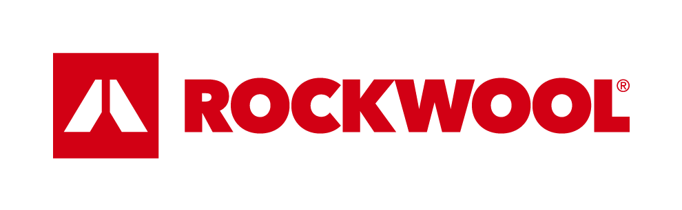
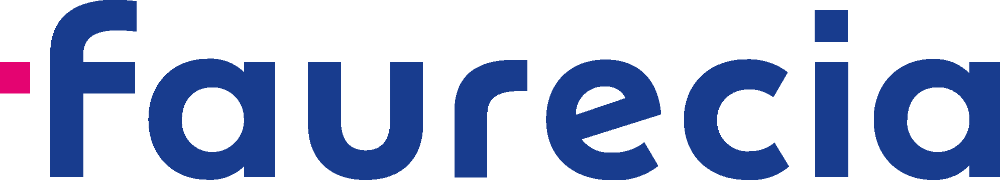

Zarządzaj substancjami chemicznymi z dowolnego miejsca.
Przetestuj uznaną na rynku aplikację do efektywnego zarządzania produktami chmicznymi w twojej firmie.
Darmowe konto testowe • Zero zobowiązań • Pełne bezpieczeństwo
MIEJSCE NA JAKIŚ OBRAZEK
Z naszej aplikacji korzystają:
- 

- 
chemIQ to zarządzanie chemią zgodnie z prawem i normami ISO.
chemIQ to nowoczesna aplikacja do zarządzania substancjami i mieszaninami chemicznymi według wymagań prawa polskiego i UE.
chemIQ jest pierwszym tego typu rozwiązaniem na polskim rynku, który stanowi wszechstronne wsparcie dla działów BHP, ochrony środowiska, planowania produkcji i innych. Spełnienie wymagań prawnych oraz analityka z chemIQ staje się bajeczne proste.
chemIQ jest pierwszym tego typu rozwiązaniem na polskim rynku, który stanowi wszechstronne wsparcie dla działów BHP, ochrony środowiska, planowania produkcji i innych. Spełnienie wymagań prawnych oraz analityka z chemIQ staje się bajeczne proste.
Maksymalna redukcja czasu pracy w twojej firmie
Dzięki aplikacji chemIQ możesz maksymalnie zredukować czas pracy osób odpowiedzialnych za zarządzanie obszarem chemikaliów, które są produkowane bądź używane w twojej firmie.
Aplikacja umożliwia sprawny przegląd kart charakterystyki substancji i mieszanin chemicznych, zestawienie ich wszelkich cech i ryzyk oraz kreowanie etykiet i skrótów, obiektywną ocenę każdej mieszaniny oraz generowanie przejrzystych raportów na potrzeby BHP oraz sprawozdań KOBIZE, korzystania ze środowiska czy raportów statystycznych.
Aplikacja umożliwia sprawny przegląd kart charakterystyki substancji i mieszanin chemicznych, zestawienie ich wszelkich cech i ryzyk oraz kreowanie etykiet i skrótów, obiektywną ocenę każdej mieszaniny oraz generowanie przejrzystych raportów na potrzeby BHP oraz sprawozdań KOBIZE, korzystania ze środowiska czy raportów statystycznych.

chemIQ w liczbach
3000
substancji
chemicznych
substancji
chemicznych
6000
mieszanin
mieszanin
600
aktywnych
użytkowników
aktywnych
użytkowników
chemIQ znacznie podnosi efektywność zarządzania substancjami chemicznymi.
Ewidencja produktów chemicznych dla firm
Prowadzenie rejestru swoich chemikaliów jest bezwzględnym wymaganiem prawnym. Tworząc swoją bazę w chemIQ, gwarantujemy sobie zgodność z unijnymi rozporządzeniami REACH i CLP oraz przepisami krajowymi. Zapewnij bezpieczeństwo sobie pracownikom i organizacji.
ChemIQ to również elektroniczny sposób zatwierdzania chemikaliów do użycia na terenie zakładu, bez konieczności wypełniania papierowych formularzy, wniosków, podpisów etc.
ChemIQ to również elektroniczny sposób zatwierdzania chemikaliów do użycia na terenie zakładu, bez konieczności wypełniania papierowych formularzy, wniosków, podpisów etc.
Kreator etykiet i skrótów
Trzy kliknięcia i mamy etykietę!
Znakuj opakowania z chemią według standardów CLP. Kod QR na etykiecie przeniesie cię bezpośrednio do aktualnej karty SDS.
Znakuj opakowania z chemią według standardów CLP. Kod QR na etykiecie przeniesie cię bezpośrednio do aktualnej karty SDS.
Ocena ryzyka chemicznego
Przenieś bezpieczeństwo na zupełnie nowy poziom. Obiektywny algorytm chemIQ ocenia ryzyka dla każdej mieszaniny i przyznaje im odpowiedni współczynnik ORCH. W chemIQ możesz określić zawartość kancerogenów, lotnych związków, substancji zakazanych, SVHC, klas ADR i dziesiątki innych parametrów. Banalnie prosto monitoruj status zakładu zwiększonego lub dużego ryzyka wystąpienia poważnej awarii przemysłowej w zakresie wszystkich kryteriów.
Analiza produktów chemicznych
Błyskawicznie twórz ważne dla ciebie zestawienia tematyczne, dotyczące substancji i mieszanin w twoim przedsiębiorstwie. Zestawiaj dane po charakterystykach, miejscach użycia, miejscach magazynowania lub dowolnych, utworzonych samodzielnie kryteriach. Eksportuj dane do formatów XLS i PDF oraz przedstawiaj je w formie potrzebnych ci tabeli i wykresów.
Zautomatyzuj nawet 90% powtarzalnych zadań!
Dołącz do grona partnerów, którzy korzystają z chemIQ.
Nasz zespół chętnie utworzy panel testowy
oraz odpowie na wszystkie pytania dotyczące oferty.
oraz odpowie na wszystkie pytania dotyczące oferty.
Napisz do nas
kontakt@chemiq.pl
Napisz na czacie
Rozpocznij czat
Zadzwoń
+48 71 340 00 28
Biuro obsługi dostępne jest od poniedziałku do piątku w godzinach 8:00-16:00.
Na naszym blogu